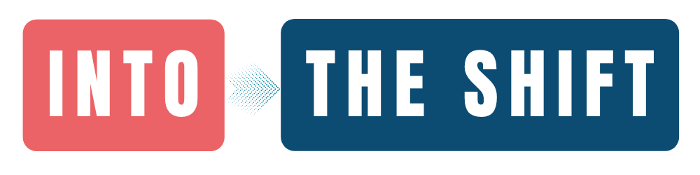

Diffuser un diagnostic comportemental en entreprise
Réaliser un état des lieux, sensibiliser les collaborateurs, accompagner une transformation et mesurer l’évolution des pratiques dans le temps.

Avec Into The Shift, composez votre diagnostic à partir de situations prêtes à l’emploi, personnalisez vos contenus, puis lancez votre campagne avec notre accompagnement.
Les répondants y répondent sans compte, sans login, sans mot de passe, sans email, sans tracking d'IP et sans cookie conservé. Les résultats sont uniquement collectifs et anonymes.
Vous pouvez explorer les bases, créer vos contenus et préparer votre campagne librement.
Depuis plus de 8 ans, nous concevons des autodiagnostics permettant de sensibiliser, faire réfléchir et mesurer des pratiques professionnelles à partir de situations concrètes. Notre méthodologie a déjà été utilisée lors de plus de 250 000 passations en France et à l'international.
Spécialistes de la conception d’autodiagnostics comportementaux.
Une méthodologie éprouvée auprès de centaines d’organisations.
Déploiements dans de nombreux contextes culturels et professionnels.
Commencez par comprendre le principe de l’autodiagnostic comportemental, puis explorez ses déclinaisons sur des sujets métier.
Une méthode 100% anonyme pour provoquer une prise de conscience individuelle et mesurer collectivement les pratiques professionnelles à partir de situations concrètes.
Comprendre la méthode Découvrir un exemple d’autodiagnosticMesurer les réflexes des collaborateurs face au phishing, aux mots de passe, au télétravail et aux situations à risque.
Découvrir →Identifier les pratiques, tensions et signaux faibles qui influencent la qualité de vie au travail.
Découvrir →Observer les pratiques vécues au quotidien : feedback, priorisation, autonomie, coopération et gestion des tensions.
Découvrir →Pour les entreprises comme pour les organismes de formation, le diagnostic comportemental permet de partir des pratiques réelles plutôt que d’un simple questionnaire d’opinion.
Réaliser un état des lieux, sensibiliser les collaborateurs, accompagner une transformation et mesurer l’évolution des pratiques dans le temps.
Analyser les besoins avant une formation, utiliser les situations comme supports pédagogiques, puis mesurer l’impact après la session.
Les sujets liés à la diversité, l’inclusion, le sexisme, le handicap, les LGBT+, les origines, la religion, les discriminations, l’égalité professionnelle, le harcèlement sexuel et allié de la mixité relèvent de l’accompagnement Me&YouToo. Ils ne sont pas ouverts à la création autonome sur Into The Shift.
Les répondants se projettent dans des cas réalistes, proches de leur quotidien professionnel.
Les résultats révèlent des pratiques, des réflexes et des écarts de perception.
Vous obtenez un lien de passation, un QR code et une base de résultats exploitable.
Into The Shift vous guide pour préparer votre diagnostic. Une fois votre configuration validée, Into The Shift assure la mise en ligne définitive.
Utilisez une base de travail ou partez d’une page vierge.
Adaptez les situations, les réponses, les chapitres et les profils.
Renseignez les dates, le pack, l’introduction et les critères utiles.
Envoyez votre configuration à Into The Shift pour préparation finale.
Lien de passation, QR code, lien du dashboard de résultats et kit de communication sont prêts à diffuser.